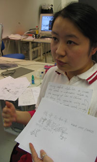

Li Li glob04@hotmail.com
Font: BOOM

Monday 24 January
I come from a different culture. Look at basic strokes from chinese type: each character must fit in a square. All the new letters try to escape from the square.
REACTIONS: Lucas: We do have a formal agreement, although it is not a square. Lucas: How does this convey intelligence?
Tuesday 25 January
Idea about relationship two different syle war between societies
show kind of relationship between diffferent characters and letters. not all the alphabet or just choose some.
How to put those different cultural differences together?
Thinking about
Normally about 3,500 characters.
western people, how they understand.
Lucas: very interesting. Li has some knowledge we don't have: she can read and write Chinese. Opportunities for here to start from her own difference to let us know something more about chinese signs through her typeface.
You have to find an angle. Only when you find one, you have an entry point into the formal idea. Once you have an idea, you have to find an idea of how to deal with it.
Wednesday 26 January
|
The idea of marrying two cultures is good, and now has taken a stronger direction. I try to create chinese typography with western letters, and in that way, combine words, so for example the finnish word "Toivo" (meaning hope) can be assimilated as a chinese character representing war. |
 |
Friday 28 January
Tovjiecz
This typeface uses the charcters T,O,V,J,I, E,C & Z as basic strokes to create the words or information relating to the meaning of war in Chinese. The English words are a translation of each Chinese character. With these basic characters you can create even more letters.
- Butterfly -- > victory.
- VOJTO --> fight
Formally, the letters have different weights. This is the result of the way the system works. I also used the characters to create the numbers. Oh, and some letters look korean!
For next week, I was thinking if the Chinese characters could fight eachother. The numbers could change really quickly.
Monday 31 January
The presentation is about showing to people who the characters are. Each part of the character comes from a combination of latin characters.
It would be some kind of interactive thing where the word changes from its english form to its new, half-chinese form. I have five characters right now, but could make some more.
I see it as a magic box, or firework, or bomb that explodes and where characters jump out from, show their name, and create the "translation".
I don't know any of the litttle icons in the dock, yet, but I can imagine how I want it to work.